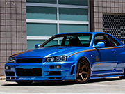

Nissan Skyline R34 V-Spec II - STAGE 3
La Nissan Skyline R34 V-Spec II dans sa version Stage 3 incarne la légende japonaise des voitures de sport, alliant performances de pointe, design emblématique et technologie de pointe pour offrir une expérience de conduite inégalée.
Propulsée par un moteur RB26DETT 2.6 litres Twin-Turbo, la R34 V-Spec II offre des performances extrêmes. Associée à une transmission manuelle 6 vitesses et à un système de traction intégrale sophistiqué, elle offre un contrôle optimal dans toutes les conditions de conduite.
Le châssis sport et la suspension spécialement réglée permettent une tenue de route précise et une agilité exceptionnelle, garantissant des performances optimales sur circuit comme sur route ouverte.
L'intérieur de la Skyline R34 V-Spec II est conçu pour le confort du conducteur et des passagers, avec des équipements haut de gamme et des technologies avancées pour une expérience de conduite immersive.
La Nissan Skyline R34 V-Spec II reste une référence parmi les amateurs de voitures de sport, alliant l'héritage de la marque Skyline à des performances dignes des plus grandes légendes de l'automobile.
Spécificités techniques du véhicule
| Caractéristique | Valeur |
|---|---|
| Moteur | RB26DETT 2.6 litres Twin-Turbo |
| Puissance | 320 chevaux |
| Couple | 397 Nm |
| Transmission | Boîte manuelle 6 vitesses |
| Accélération (0-100 km/h) | 4,9 secondes |
| Vitesse maximale | 250 km/h |
| Châssis | Sport renforcé |
| Suspension | Réglable sport |
| Freins | Disques ventilés, ABS |
| Pneus | Avant 245/40 R18, Arrière 265/35 R18 |
| Poids | 1560 kg |
| Consommation moyenne | 13 L/100km |